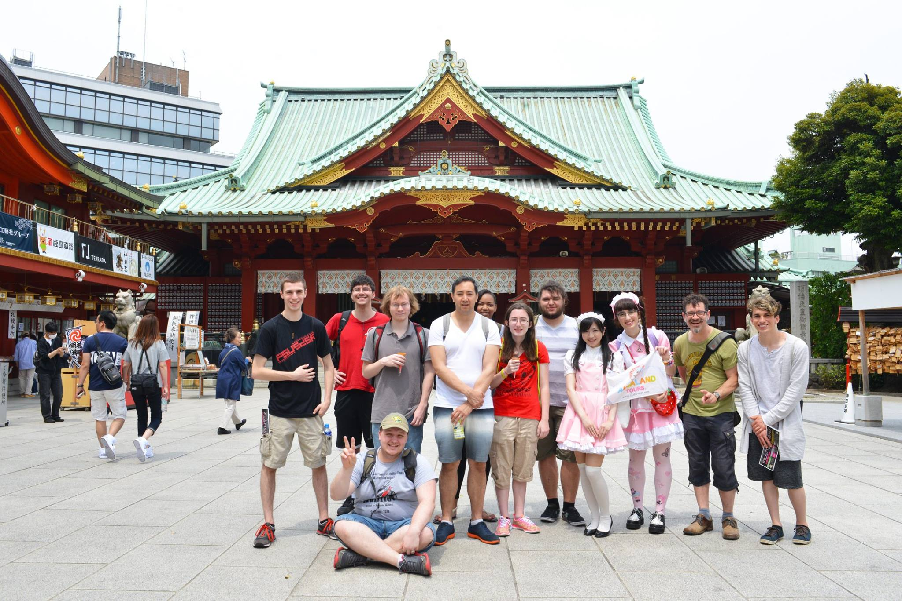
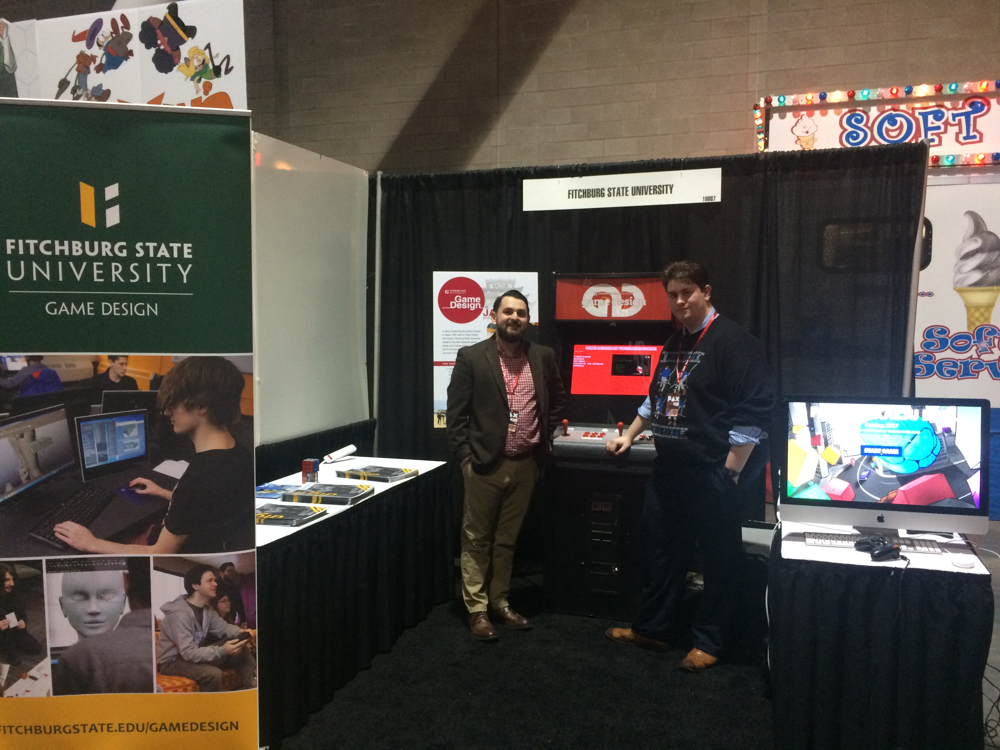

Events
The Game Design program at Fitchburg State University has hosted and participated in numerous events, from professional networking to international study. Here you can get a taste of some of these enriching programs.

Japan Trip
After the spring semester students are given the opportunity to visit Japan with professors. This opportunity allows them to experience many game comanies in the country, as well as sightseeing and other activities.

Global Game Jam
Fitchburg State University’s Game Design program has been a host site for the Global Game Jam since 2015

PAX East
Game Design has hosted a booth at PAX East from 2014-2017. During 2017, our students also showcased a game at the Pax East / Made in MA Party